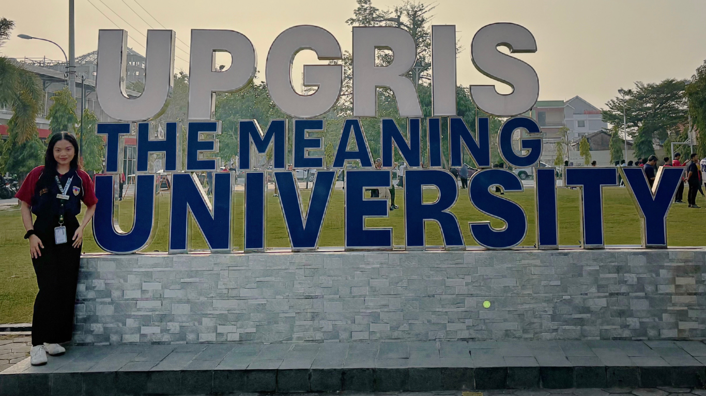
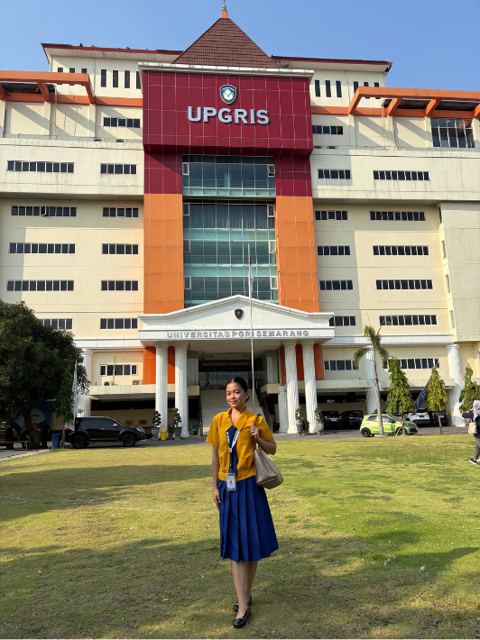
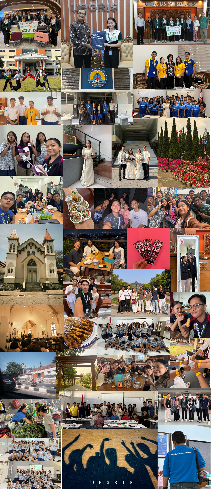

What began as an opportunity became a journey of growth, purpose, and self-discovery.

Some experiences stay with us long after they end, and my SEA-Teacher journey in Indonesia is one of them. Beyond the places I visited and the activities I participated in, it was the lessons, people, and experiences that made this chapter truly meaningful.
Looking back, I realized that this journey offered more than the opportunity to teach in another country. It challenged me to step outside my comfort zone, adapt to unfamiliar situations, and gain confidence in ways I never expected. Every challenge, no matter how small, became an opportunity to learn and grow.
This experience also gave me a different perspective on teaching. Observing how values, reflection, and character formation were integrated into the learning process inspired me to think more deeply about the kind of educator I want to become. These are practices that I hope to bring back to the Philippines and apply in my future classroom. More than academic learning, I learned the importance of creating an environment where students feel valued, heard, and encouraged to grow.
Living in another country also taught me lessons that cannot be learned from books alone. Being surrounded by people from different backgrounds helped me understand that meaningful connections are built through kindness, respect, and openness rather than language, nationality, or culture. What once felt unfamiliar gradually became a place filled with comfort, belonging, and friendships that I will always cherish.
Most importantly, this journey reminded me why I chose this profession in the first place. Through every classroom experience, every interaction with students, and every lesson learned along the way, my passion for teaching became stronger. At the same time, I gained a clearer understanding of the responsibility and purpose that comes with being an educator. It was during this journey that I realized teaching is not only about sharing knowledge but also about helping shape lives, build character, and create meaningful connections.
As I move forward, I will carry the lessons, values, and memories I gained from this journey. They will continue to guide me as I pursue my dream of becoming an educator and remind me of how much one opportunity can change a person's life.
Indonesia will always be a chapter that I will look back on with gratitude and pride. It was a chapter that strengthened my passion, deepened my purpose, and shaped the teacher I hope to become.
Indeed, this was where passion met purpose.
See you again, Indonesia—until our paths cross once more.

A Chapter in Frames
| Moments Worth Keeping